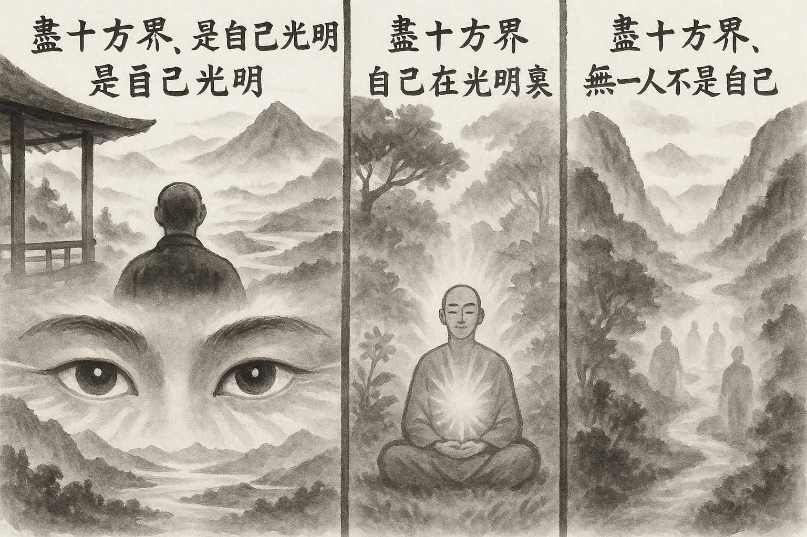

七十五巻 巻一覧
正法眼藏第15 光明
本紹介ページの導入・語彙・深掘り・クイズは tools/regen_volume_intro_from_corpus.py が OpenAI API で生成したものです（入力は当巻の原文からの短い抜粋のみ）。内容はモデル出力のため、重要箇所は必ず原文・教本と照合してください。
出典: https://shomonji.or.jp/zazen/doc/genzou.html
原文・現代語訳の全文は 全文ページを参照してください。
この巻の紹介（導入）
大宋國湖南長沙招賢大師、上堂示衆云、盡十方界、是沙門眼。
盡十方界、自己在光明裏。
語彙の足場
- 光明：仏教において、自己の内に存在する真理や悟りの象徴。光明は、仏の智慧や真理を示すものであり、自己の本質を理解することを意味する。
- 沙門：仏教において、出家して修行する者のこと。沙門は、世俗を離れ、精神的な修行を通じて悟りを目指す。
- 佛道：仏教の教えや実践を指し、仏の教えに従って生きることを目指す道。仏道を歩むことで、悟りや解脱を得ることができるとされる。
- 參學：仏教における学びや修行を指し、教えを学び、実践すること。參學は、自己の内面を深く探求する過程である。
原文（要点の抜粋）
当巻の冒頭付近からの短い抜粋です。長い引用は載せていません。 全文は全文ページを参照してください。出典はリポジトリ内 doc/正法眼蔵.txt です。原文の参照元: https://shomonji.or.jp/zazen/doc/genzou.html
大宋國湖南長沙招賢大師、上堂示衆云、
盡十方界、是沙門眼。
（盡十方界、是れ沙門の眼）
盡十方界、是沙門家常語。
（盡十方界、是れ沙門の家常語）
盡十方界、是沙門全身。
（盡十方界、是れ沙門の全身）
盡十方界、是自己光明。
（盡十方界、是れ自己の光明）
盡十方界、自己在光明裏。
（盡十方界、自己の光明裏に在り）
盡十方界、無一人不是自己。
図解（4コマ・AI生成）
教義の根拠は原文・出典に従い、漫画は比喩の補助に留めてください。

深掘り（読解の手掛かり）
- 光明は自己の内に存在し、他者と共有されるものとされる。
- 沙門の眼は、全ての存在を見通す視点を象徴する。
- 佛道の修行には、勤勉さが求められ、疎遠になってはいけない。
- 光明は、仏の教えと自己の悟りを結びつける重要な概念である。
確認（形成評価）
各設問の下の「採点」で正誤を表示します（ブラウザ内のみ。ログは送りません）。